import os, re, time, warnings
import numpy as np
import pandas as pd
import requests # for pulling data from the two APIs
import matplotlib.pyplot as plt
import statsmodels.formula.api as smf # smf.ols() for regression
import statsmodels.api as sm
from statsmodels.stats.outliers_influence import variance_inflation_factor # VIF check
from scipy import stats # pearsonr, ttest_ind
from IPython.display import display
# Suppress the usual pandas/statsmodels noise
warnings.filterwarnings("ignore")
# Cleaner-looking plots: bump up resolution, drop the top/right border
plt.rcParams.update({
"figure.dpi": 130,
"axes.spines.top": False,
"axes.spines.right": False,
"font.size": 10,
"axes.titlesize": 10,
"axes.labelsize": 9,
})
pd.set_option("display.float_format", "{:.3f}".format) # 3 decimal places in tables
YEAR = 2019 # Everything is anchored to pre-pandemic 2019
# One consistent colour per region
REGION_COLORS = {
"Africa": "#E69F00",
"Americas": "#56B4E9",
"Asia": "#009E73",
"Europe": "#F0E442",
"Oceania": "#CC79A7",
}
# Human-readable axis labels for the regression variable names
PRED_LABELS = {
"Intercept": "(Intercept)",
"dist_equator": "Dist. equator (deg)",
"landlocked": "Landlocked",
"agriculture_share": "Agriculture share (%)",
"trade_share": "Trade share (%)",
"urbanization": "Urbanisation (%)",
"log_population": "log(Population)",
}
# Helper functions
def sig_stars(p):
"""p-value to significance stars (*, **, ***)"""
if p < 0.001: return "***"
if p < 0.01: return "**"
if p < 0.05: return "*"
return ""
def safe_pval(p):
"""Print '< 0.001' when p is SMALL enough, otherwise show the actual value"""
return "< 0.001" if p < 0.001 else f"= {p:.3f}"
def fmt_coef(coef, se, pval):
"""Format one regression cell as 0.045*** (0.005)"""
return f"{coef:.3f}{sig_stars(pval)} ({se:.3f})"
def scatter_fit(ax, x_col, y_col, df, xlabel, ylabel, title):
"""
Scatter plot coloured by region + dashed OLS trend line +
Pearson r annotated in the bottom-right corner.
Used for Figures 3, 4, 5, 7a, 7b, 7c.
"""
sub = df[[x_col, y_col, "region"]].dropna()
ax.scatter(sub[x_col], sub[y_col],
c=sub["region"].map(REGION_COLORS).fillna("#999"),
s=28, alpha=0.72, edgecolors="none")
xv, yv = sub[x_col].values, sub[y_col].values
slope, intercept = np.polyfit(xv, yv, 1) # simple OLS fit
xr = np.linspace(xv.min(), xv.max(), 200)
ax.plot(xr, slope * xr + intercept, color="black", lw=2, ls="--", alpha=0.7)
r, p = stats.pearsonr(xv, yv)
ax.text(0.97, 0.06, f"r = {r:.2f} (p {safe_pval(p)})",
transform=ax.transAxes, ha="right", fontsize=8.5)
ax.set_xlabel(xlabel)
ax.set_ylabel(ylabel)
ax.set_title(title)From Geography to Development
A Cross-Country Study of Economic Structure and National Income
Disclaimer: This study uses cross-sectional country-level data for 2019 as a course project. All reported relationships are descriptive associations, not causal claims. The analysis examines potential associations between geography and economic development, but does not capture all relevant determinants; institutional, historical, and political factors are among those omitted.
Source code and data: github.com/UTSGJohnsonSong/JSC370-midterm-project-from-geography-to-development
1 Introduction
When we look at the history of global development, we may wonder: are the development differences we observe between countries today somehow predetermined? Why do countries differ so dramatically in wealth, urbanisation, and economic complexity? One influential argument in the development literature is that geography plays an important role, for instance, countries in temperate climates, with coastlines and navigable waterways, tended to develop more productive agricultural systems and more complex economies over the long run. Empirical studies document a correlation between latitude and income at the country level (Gallup, Sachs & Mellinger, 1999; Acemoglu, Johnson & Robinson, 2001).
Geography alone, however, cannot explain all cross-country differences in development. Singapore lies almost exactly on the equator, while Botswana is landlocked and tropical yet has experienced substantial economic growth. Conversely, many countries in colder climates remain relatively poor. These examples suggest that geography may matter, but it likely operates alongside, and is often dominated by other factors such as institutions, colonial history, and government policy (Rodrik, Subramanian & Trebbi, 2004).
This project examines a cross-section of countries in 2019 to explore how geography relates to economic outcomes. In particular, it looks at whether geographic conditions are associated with differences in economic structure — including agricultural dependence, trade openness, and levels of urbanisation.
This analysis will examine whether these structural characteristics are related to income between countries. A reasonable assumption is that geographical conditions shape a country’s economic type, such as its agricultural dependence, urbanization level, and trade integration, and these structural characteristics are most directly related to income. As such, after controlling for structural variables, the geographical coefficient in the regression analysis should decrease, but not necessarily drop to null.
Core Research Question
To what extent does geography relate to economic development across countries, and is this association attenuated after conditioning on differences in economic structure?
Subquestions
- Are geographic characteristics associated with economic structure across countries?
- Are economic structure variables associated with national income levels?
- Does the association between geography and income weaken after controlling for economic structure?
Conceptual Framework
| Geographya | Economic Structureb | Developmentc |
|---|---|---|
| Latitude, Landlocked | Agriculture share, Trade share, Urbanisation | GDP per capita |
a Geographic proxies for climate gradients and maritime trade access, following Gallup et al. (1999) and Limão & Venables (2001). b Structural transformation indicators following Kuznets (1966) and the World Bank Development Indicators framework. c GDP per capita as the standard cross-country income measure; see Acemoglu et al. (2001) and Rodrik et al. (2004) for context on income determinants.
Notice: We aim to examine whether these variables are correlated and whether the geography–income association changes when structure variables are added as controls.
These three structure variables are chosen to capture three classic dimensions of structural transformation: the declining share of primary-sector output (agriculture), increasing urban concentration (urbanisation), and integration with external markets (trade openness). GDP per capita is used as the development measure because it is consistently available across countries and is the standard benchmark in the comparative development literature. These choices narrow a very large conceptual space to a tractable set of indicators; the limitations section returns to what is left out.
The geographic variables used here are distance from the equator (a rough proxy for climate zone), landlocked status (a proxy for maritime trade access), and a binary tropical indicator. Economic structure is measured using three World Bank indicators: agricultural value added as a share of GDP, trade as a share of GDP, and the urban population share.
Hypotheses
| ID | Hypothesis |
|---|---|
| H1a | Countries farther from the equator are expected to have lower agricultural dependence. |
| H1b | Countries farther from the equator are expected to have higher urbanisation. |
| H2 | Landlocked countries are expected to have lower trade openness than coastal countries. |
| H3 | Trade openness and urbanisation are expected to be positively associated with GDP per capita; agricultural dependence negatively. |
| H4 | The association between geography and GDP is expected to weaken after adding economic structure variables to the regression. |
2 Methods
2.1 Data Sources
For this project, I used two publicly accessible APIs — neither requires an API key.
REST Countries API (https://restcountries.com/v3.1/all) provides country-level geographic metadata including country name, ISO3 code (cca3), latitude and longitude, world region, subregion, landlocked status, and population. This is the source for all geography-side variables.
World Bank Development Indicators API (https://api.worldbank.org/v2/country/all/indicator/{code}) provides the annual economic indicators. The five series pulled for 2019 are:
| Indicator Code | Variable | Description |
|---|---|---|
| NY.GDP.PCAP.CD | gdp_per_capita |
GDP per capita (current USD) |
| NE.TRD.GNFS.ZS | trade_share |
Trade (% of GDP) |
| SP.URB.TOTL.IN.ZS | urbanization |
Urban population (% of total) |
| NV.AGR.TOTL.ZS | agriculture_share |
Agriculture, forestry, fishing (% of GDP) |
| SP.POP.TOTL | population |
Population total |
I chose 2019 as the base year because it is the last full pre-pandemic year with relatively broad World Bank coverage. More recent years carry the disruption of COVID-19 and its uneven recovery, which would add noise that is hard to interpret in a purely cross-sectional setting.
2.2 Data Acquisition
I retrieved all data programmatically using the requests library. The two data sources are merged using ISO3 three-letter country codes, which serve as a consistent identifier across datasets.
The World Bank API returns not only individual countries but also regional aggregates and income-group entries that use ISO-style three-letter codes. To ensure that only countries are included, these aggregate codes are removed using a curated exclusion list together with a regex filter that retains only valid ISO3 country codes. I reused the same filtering approach from HW2 (the clean_wb_data() function) here for consistency.
2.3 Cleaning and Sample Construction
Once both sources are pulled, the following cleaning steps are applied before the analytic sample is finalised:
- REST Countries entries with non-standard ISO3 codes (length not equal to 3) are dropped.
- World Bank entries matching the aggregate-code list or failing the
[A-Z]{3}format check are excluded. - The two sources are merged on ISO3 using an inner join (keeping only countries present in both).
- Rows missing
latitudeare dropped, and any duplicate ISO3 entries are removed. - All analytic columns are coerced to numeric; values that cannot be parsed become
NaN. - A set of plausibility checks is run to flag any out-of-range values.
- Missing values across the five core variables are tabulated before the final filter.
- Only complete cases on the five core variables are kept for the analytic sample:
latitude,gdp_per_capita,trade_share,urbanization,agriculture_share.
Plausibility bounds:
| Variable | Expected range |
|---|---|
latitude |
[−90, 90] |
gdp_per_capita |
> 0 |
trade_share |
≥ 0 |
urbanization |
[0, 100] |
agriculture_share |
[0, 100] |
2.4 Feature Engineering
| Derived variable | Definition |
|---|---|
dist_equator |
abs(latitude) — distance from equator in degrees |
tropical |
1 if abs(latitude) < 23.5, else 0 |
log_gdp |
log(gdp_per_capita) — natural log of GDP per capita |
log_population |
log(population) — natural log of population |
gdp_tercile |
Quantile-based income tercile (Low / Medium / High), used for visualisation only |
Note tropical, it is included in the correlation heatmap for exploratory purposes but is not entered in any of the inferential regression models.
Note Population source: Population figures are taken from the World Bank (SP.POP.TOTL, 2019) where available. If not avaliable, the REST Countries population field is used as a fallback.
2.5 Analytical Strategy
The analysis moves through four main steps. First, I check the dataset and examine missing values. Second, I provide descriptive statistics to summarise the main variables. Third, I explore the patterns in the data through a structured visual EDA, which itself proceeds in three sub-steps: Figures 1–2 examine the distribution of the outcome variable and regional income patterns; Figures 3–5 explore how geographic variables relate to economic structure and directly to income, establishing the raw geography-income association; and Figures 7a–7c examine how the three economic structure variables relate to income outcomes, providing the descriptive basis for the regression models. Finally, I run formal statistical tests and a sequence of nested OLS regression models to examine those relationships more rigorously.
For the regression analysis, I estimate four nested OLS models with heteroskedasticity-robust standard errors. Variables are added step by step to see how the relationship between geography and income changes when additional controls are included(reference STA302). All models use the same complete-case sample so that any differences in coefficients come from the model specification rather than changes in the sample. A fifth model adds region fixed effects as a robustness check for continental confounding. However, region dummies only absorb broad continent-level differences; they do not control for deeper institutional, historical, or governance factors that vary within regions and may simultaneously drive both economic structure and income. The results should therefore be interpreted as descriptive associations rather than causal effects.
3 Preliminary Results
Code
# World Bank aggregate / group codes — these carry valid 3-letter ISO-style codes
# but represent regions, income groups, or lending categories, not individual countries.
# Source: https://api.worldbank.org/v2/region, /incomelevel, /lendingtype
AGGREGATES = {
# Region codes (44) — same list as HW2
"AFE", "AFR", "AFW", "ARB", "CAA", "CEA", "CEB", "CEU", "CLA", "CME",
"CSA", "CSS", "EAP", "EAR", "EAS", "ECA", "ECS", "EMU", "EUU", "FCS",
"HPC", "LAC", "LCN", "LDC", "LTE", "MDE", "MEA", "MNA", "NAC", "NAF",
"NRS", "OED", "OSS", "PRE", "PSS", "PST", "RRS", "SAS", "SSA", "SSF",
"SST", "SXZ", "WLD", "XZN",
# Income level codes (7) — same list as HW2
"HIC", "INX", "LIC", "LMC", "LMY", "MIC", "UMC",
# Lending type codes — HW2 base (IBD, IDB, IDX, LNX) plus IDA/IBT groupings
"IBD", "IBT", "IDA", "IDB", "IDX", "LNX",
# IDA & IBRD country groupings (6) — same list as HW2
"TEA", "TEC", "TLA", "TMN", "TSA", "TSS",
}
_ISO3_RE = re.compile(r"^[A-Z]{3}$")
def fetch_rest_countries():
"""Pull geographic metadata from REST Countries API."""
url = "https://restcountries.com/v3.1/all"
try:
r = requests.get(url,
params={"fields": "name,cca3,latlng,region,subregion,landlocked,population"},
timeout=30)
r.raise_for_status()
except requests.exceptions.RequestException as e:
print(f"Error fetching REST Countries: {e}")
return pd.DataFrame()
rows = []
for c in r.json():
ll = c.get("latlng", [None, None])
rows.append({
"iso3": c.get("cca3", ""),
"country": c.get("name", {}).get("common", ""),
"latitude": ll[0] if ll else None,
"longitude": ll[1] if len(ll) > 1 else None,
"region": c.get("region", ""),
"subregion": c.get("subregion", ""),
"landlocked": int(c.get("landlocked", False)),
"population": c.get("population"),
})
return (pd.DataFrame(rows)
.query("iso3.str.len() == 3")
.reset_index(drop=True))
def fetch_wb(indicator, year=YEAR):
"""Pull one World Bank indicator for all countries in a given year,
excluding aggregate/regional codes."""
url = f"https://api.worldbank.org/v2/country/all/indicator/{indicator}"
try:
r = requests.get(url,
params={"date": year, "format": "json", "per_page": 300},
timeout=30)
r.raise_for_status()
data = r.json()
except requests.exceptions.RequestException as e:
print(f" Error fetching {indicator}: {e}")
return pd.DataFrame(columns=["iso3", "value"])
if len(data) < 2 or not data[1]:
return pd.DataFrame(columns=["iso3", "value"])
records = []
for e in data[1]:
iso = e.get("countryiso3code", "")
val = e.get("value")
if val is None or not iso:
continue
if iso in AGGREGATES or not _ISO3_RE.match(iso):
continue
records.append({"iso3": iso, "value": val})
return pd.DataFrame(records)
WB_INDICATORS = {
"NY.GDP.PCAP.CD": "gdp_per_capita",
"NE.TRD.GNFS.ZS": "trade_share",
"SP.URB.TOTL.IN.ZS": "urbanization",
"NV.AGR.TOTL.ZS": "agriculture_share",
"SP.POP.TOTL": "population_wb",
}
# First we pull geographic metadata from REST Countries
geo_df = fetch_rest_countries()
n_rest = len(geo_df)
display(geo_df[["iso3", "country", "region", "latitude", "landlocked"]].head(5))
# Then we loop over each WB indicator and merge them into a single wide frame
wb_counts = {}
wb_df = None
for wb_code, col in WB_INDICATORS.items():
tmp = fetch_wb(wb_code).rename(columns={"value": col})
wb_counts[col] = len(tmp)
wb_df = tmp if wb_df is None else wb_df.merge(tmp, on="iso3", how="outer")
print(f" {col}: {len(tmp):>3} non-null observations ({YEAR})")
time.sleep(0.2)
# Prefer World Bank population as we mentioned early, rename to disambiguate before merge
if "population_wb" in wb_df.columns:
geo_df = geo_df.rename(columns={"population": "population_geo"})
wb_df = wb_df.rename(columns={"population_wb": "population"})
display(wb_df.head(5))| iso3 | country | region | latitude | landlocked | |
|---|---|---|---|---|---|
| 0 | ZWE | Zimbabwe | Africa | -20.000 | 1 |
| 1 | KIR | Kiribati | Oceania | 1.417 | 0 |
| 2 | GHA | Ghana | Africa | 8.000 | 0 |
| 3 | PRK | North Korea | Asia | 40.000 | 0 |
| 4 | ESP | Spain | Europe | 40.000 | 0 |
gdp_per_capita: 211 non-null observations (2019)
trade_share: 182 non-null observations (2019)
urbanization: 217 non-null observations (2019)
agriculture_share: 199 non-null observations (2019)
population_wb: 217 non-null observations (2019)| iso3 | gdp_per_capita | trade_share | urbanization | agriculture_share | population | |
|---|---|---|---|---|---|---|
| 0 | ABW | 30645.891 | 137.962 | 62.288 | 0.018 | 109203 |
| 1 | AFG | 496.603 | NaN | 25.144 | 25.774 | 37856121 |
| 2 | AGO | 2493.679 | 60.715 | 66.664 | 12.391 | 32375632 |
| 3 | ALB | 6069.439 | 75.382 | 56.764 | 18.160 | 2567801 |
| 4 | AND | 41257.816 | NaN | 88.539 | 0.523 | 76474 |
Code
# Merge the two sources on ISO3, then clean in sequence: drop bad rows,
# reconcile population, coerce types, run plausibility checks, record
# missingness, apply filtering, and engineer analysis variables.
# First we inner join on ISO3
df_merged = geo_df.merge(wb_df, on="iso3", how="inner")
n_inner = len(df_merged)
# Next we drop rows with no latitude and remove any duplicate ISO3 codes
df_merged = (df_merged
.dropna(subset=["latitude"])
.drop_duplicates("iso3")
.reset_index(drop=True))
n_latlon = len(df_merged)
# We prefer the WB population figure; fill gaps from REST Countries where WB is missing
if "population_geo" in df_merged.columns:
df_merged["population"] = df_merged["population"].fillna(df_merged["population_geo"])
df_merged = df_merged.drop(columns=["population_geo"], errors="ignore")
# Coerce all key columns to numeric, turning any non-parseable values into NaN
NUM_COLS = ["latitude", "longitude", "population",
"gdp_per_capita", "trade_share", "urbanization", "agriculture_share"]
for c in NUM_COLS:
if c in df_merged.columns:
df_merged[c] = pd.to_numeric(df_merged[c], errors="coerce")
# Run basic plausibility checks before any filtering
checks = {
"latitude ∈ [−90, 90]": df_merged["latitude"].between(-90, 90).all(),
"gdp_per_capita > 0": (df_merged["gdp_per_capita"].dropna() > 0).all(),
"trade_share ≥ 0": (df_merged["trade_share"].dropna() >= 0).all(),
"urbanization ∈ [0, 100]": df_merged["urbanization"].dropna().between(0, 100).all(),
"agriculture_share ∈ [0, 100]": df_merged["agriculture_share"].dropna().between(0, 100).all(),
}
plaus_tbl = pd.DataFrame({
"Check": list(checks.keys()),
"Passed": ["Yes" if v else "No" for v in checks.values()],
})
# Record missingness in each core variable before we apply the complete-case filter
CORE = ["latitude", "gdp_per_capita", "trade_share", "urbanization", "agriculture_share"]
CORE_LABELS = {
"latitude": "Latitude",
"gdp_per_capita": "GDP per capita",
"trade_share": "Trade share",
"urbanization": "Urbanisation",
"agriculture_share": "Agriculture share",
}
miss_pre = (df_merged[CORE].isnull().sum()
.rename(CORE_LABELS)
.to_frame("n_missing")
.assign(pct_missing=lambda x:
(x["n_missing"] / len(df_merged) * 100).round(1))
.sort_values("n_missing", ascending=False))
# Keep only rows with complete data on all five core variables
n_pre_cc = len(df_merged)
df_an = df_merged.dropna(subset=CORE).reset_index(drop=True).copy()
n_an = len(df_an)
# Derive the analysis variables used throughout the paper
df_an["dist_equator"] = df_an["latitude"].abs()
df_an["tropical"] = (df_an["latitude"].abs() < 23.5).astype(int)
df_an["log_gdp"] = np.log(df_an["gdp_per_capita"].clip(lower=1))
df_an["log_population"] = np.log(df_an["population"].clip(lower=1))
df_an["gdp_tercile"] = pd.qcut(df_an["gdp_per_capita"], q=3,
labels=["Low", "Medium", "High"])
# Build a sample flow table to document how many rows survive each step
flow_tbl = pd.DataFrame({
"Stage": [
"REST Countries (after ISO3 filter)",
"World Bank: GDP per capita (non-null, 2019)",
"After inner join (REST × WB)",
"After latitude filter / deduplication",
"After complete-case filter (5 core vars)",
],
"N": [
n_rest,
wb_counts.get("gdp_per_capita", "—"),
n_inner,
n_latlon,
n_an,
]
})3.1 Dataset Inspection
Code
display(flow_tbl.style.set_caption("Sample Flow"))
display(miss_pre.style.set_caption(f"Pre-filter Missingness (core variables, n = {n_an})"))
display(plaus_tbl.style.set_caption("Plausibility Checks"))| Stage | N | |
|---|---|---|
| 0 | REST Countries (after ISO3 filter) | 250 |
| 1 | World Bank: GDP per capita (non-null, 2019) | 211 |
| 2 | After inner join (REST × WB) | 215 |
| 3 | After latitude filter / deduplication | 215 |
| 4 | After complete-case filter (5 core vars) | 173 |
| n_missing | pct_missing | |
|---|---|---|
| Trade share | 34 | 15.800000 |
| Agriculture share | 18 | 8.400000 |
| GDP per capita | 6 | 2.800000 |
| Latitude | 0 | 0.000000 |
| Urbanisation | 0 | 0.000000 |
| Check | Passed | |
|---|---|---|
| 0 | latitude ∈ [−90, 90] | Yes |
| 1 | gdp_per_capita > 0 | Yes |
| 2 | trade_share ≥ 0 | Yes |
| 3 | urbanization ∈ [0, 100] | Yes |
| 4 | agriculture_share ∈ [0, 100] | Yes |
Starting from 250 countries, 42 were dropped due to missing values, primarily trade share (34 missing) and agriculture share (18 missing), leaving a final analytic sample of 173 countries. All five plausibility checks passed with no out-of-range values detected. The next step we switch to examine the selection bias of regions, which is if the dropped countries cluster in particular regions.
Code
# Examine whether dropped countries cluster by region.
# df_merged at this point still has all post-merge, post-latlon rows.
# We add a flag for whether a row survived the complete-case filter.
df_merged_flagged = df_merged.copy()
df_merged_flagged["complete"] = df_merged_flagged["iso3"].isin(df_an["iso3"])
miss_region = (df_merged_flagged
.groupby("region")["complete"]
.agg(total="count", kept="sum")
.assign(dropped=lambda x: x["total"] - x["kept"],
pct_kept=lambda x: (x["kept"] / x["total"] * 100).round(1))
.sort_values("pct_kept"))
display(miss_region[["total", "kept", "dropped", "pct_kept"]]
.rename(columns={"total": "Total", "kept": "Kept",
"dropped": "Dropped", "pct_kept": "% Kept"})
.style.set_caption("Table A1. Complete-Case Retention by World Region (Rows dropped = countries missing any core variable)"))| Total | Kept | Dropped | % Kept | |
|---|---|---|---|---|
| region | ||||
| Americas | 46 | 29 | 17 | 63.000000 |
| Oceania | 19 | 12 | 7 | 63.200000 |
| Africa | 54 | 47 | 7 | 87.000000 |
| Asia | 49 | 43 | 6 | 87.800000 |
| Europe | 47 | 42 | 5 | 89.400000 |
After cleaning, we end up with 173 countries. Most of the sample reduction came from missing World Bank indicator values for 2019, particularly for trade share and agriculture share, which are not consistently reported for a number of smaller economies and microstates. The geographic variables from REST Countries are fully observed for all entries, so the geography side is not the bottleneck. And all plausibility checks passed cleanly, with no values outside the expected ranges. The final sample includes countries from all five world regions.
Looking at Table A1, we can see the retention rate by region. The lowest retention rates are in the Americas and Oceania — it looks like several small island states and smaller economies lack complete reporting for trade or agriculture indicators. This means the analytic sample skews slightly toward data-rich, more institutionally stable countries within each region, which is a mild selection concern worth keeping in mind when interpreting the descriptive patterns.
3.2 Descriptive Statistics
Code
STAT_LABELS = {
"dist_equator": "Distance to equator (deg)",
"gdp_per_capita": "GDP per capita (USD)",
"log_gdp": "log(GDP per capita)",
"trade_share": "Trade (% of GDP)",
"urbanization": "Urbanisation (%)",
"agriculture_share": "Agriculture (% of GDP)",
"population": "Population",
}
cols = [c for c in STAT_LABELS if c in df_an.columns]
t1 = df_an[cols].describe().T[["count", "mean", "std", "min", "50%", "max"]]
t1.columns = ["N", "Mean", "SD", "Min", "Median", "Max"]
t1.index = [STAT_LABELS[c] for c in t1.index]
t1 = t1.round(2)
display(t1.style.set_caption(f"Table 1. Descriptive Statistics — Analytic Sample (n = {n_an}, 2019)"))| N | Mean | SD | Min | Median | Max | |
|---|---|---|---|---|---|---|
| Distance to equator (deg) | 173.000000 | 27.180000 | 17.380000 | 0.000000 | 25.000000 | 72.000000 |
| GDP per capita (USD) | 173.000000 | 17390.270000 | 22651.190000 | 449.230000 | 6718.860000 | 115798.040000 |
| log(GDP per capita) | 173.000000 | 8.890000 | 1.430000 | 6.110000 | 8.810000 | 11.660000 |
| Trade (% of GDP) | 173.000000 | 90.410000 | 58.470000 | 22.820000 | 77.560000 | 382.660000 |
| Urbanisation (%) | 173.000000 | 62.070000 | 22.330000 | 16.140000 | 64.980000 | 100.000000 |
| Agriculture (% of GDP) | 173.000000 | 9.540000 | 9.570000 | 0.020000 | 5.700000 | 40.740000 |
| Population | 173.000000 | 42135174.180000 | 154608879.400000 | 17798.000000 | 9054000.000000 | 1407745000.000000 |
Table 1 summarises the main variables before any modelling. I want to highlight a few features of the distributions that directly affect the modelling choices below.
Distance to the equator ranges from 0 to 72 degrees, with a mean of 27 degrees. This variable captures how far a country lies from the tropical zone and serves as the main geographic measure in the analysis. The wide range indicates that the sample includes countries from equatorial regions as well as high-latitude areas.
GDP per capita is strongly right-skewed (range: around $450 to around $115,000; median around $6,700). I apply the log transformation at this stage — before the visual EDA — so that all subsequent figures, correlation statistics, and regression models operate on the same scale. This is a deliberate choice: it ensures that the descriptive patterns shown in the EDA are directly comparable to the regression results, rather than having the plots show raw GDP while the models use log GDP.
Trade openness shows the widest relative spread of any variable, averaging around 90 percent of GDP but ranging to over 380 percent. The extreme upper end reflects small, trade-intensive economies for whom exports plus imports mechanically exceed GDP. This skewness is worth noting when interpreting the trade-income correlation, since the extreme values belong to a structurally distinct group rather than countries that are simply “more open.” Urbanisation (mean is around 62%, range is around 16%–100%) and agriculture share (mean is around 9.5%, range is around 0%–40%) span the full spectrum from early-stage agrarian economies to fully post-industrial ones, giving the structural variables useful between-country variation for the regression analysis.
Population ranges from fewer than 20,000 to over 1.4 billion, making log transformation essential here as well. The enormous scale heterogeneity across countries reinforces the case for using log population as a control rather than raw population.
3.3 Visual EDA
Code
# raw vs log — the contrast makes the case for log transformation
fig, axes = plt.subplots(1, 2, figsize=(12, 4.5))
axes[0].hist(df_an["gdp_per_capita"].dropna(), bins=30,
color="#2E6DA4", alpha=0.8, edgecolor="white", lw=0.5)
axes[0].set_xlabel("GDP per capita (USD)")
axes[0].set_ylabel("Count")
axes[0].set_title("a) Raw GDP per capita")
axes[1].hist(df_an["log_gdp"].dropna(), bins=25,
color="#D45F3B", alpha=0.8, edgecolor="white", lw=0.5)
axes[1].set_xlabel("log(GDP per capita)")
axes[1].set_ylabel("Count")
axes[1].set_title("b) log(GDP per capita)")
fig.suptitle("Figure 1. Distribution of GDP per Capita (2019)", y=1.01)
plt.tight_layout()
plt.show()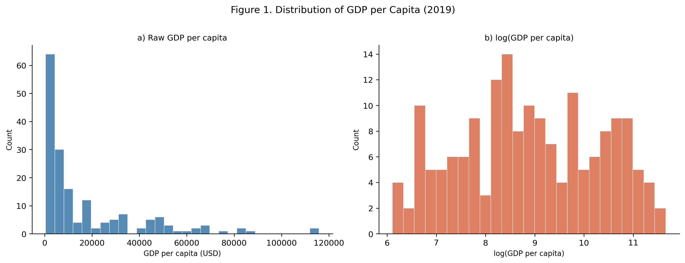
Figure 1. Different version of GDP per capita was shown on the raw scale (left) and log scale (right). The raw distribution is strongly right-skewed, with most countries concentrated at lower income levels and a long tail of wealthier countries. The log transformation produces a much more symmetric distribution and should be used throughout the rest of the analysis.
Code
from plotnine import (ggplot, aes, geom_violin, geom_boxplot,
labs, theme_minimal, theme, element_text,
scale_fill_manual)
sub2 = df_an[["region", "log_gdp"]].dropna()
# same palette as the scatter plots so colours are consistent throughout
region_palette = {
"Africa": "#E69F00",
"Americas": "#56B4E9",
"Asia": "#009E73",
"Europe": "#F0E442",
"Oceania": "#CC79A7",
}
fig2 = (
ggplot(sub2, aes(x="region", y="log_gdp", fill="region"))
+ geom_violin(alpha=0.65, trim=True)
+ geom_boxplot(width=0.15, alpha=0.85, outlier_alpha=0.4, # narrow box sits inside violin
outlier_size=1.5)
+ scale_fill_manual(values=region_palette)
+ labs(
x="World Region",
y="log(GDP per capita)",
title="Figure 2. GDP per Capita by World Region (2019)",
fill="Region",
)
+ theme_minimal()
+ theme(figure_size=(10, 5),
axis_text_x=element_text(rotation=15),
legend_position="none")
)
fig2.show()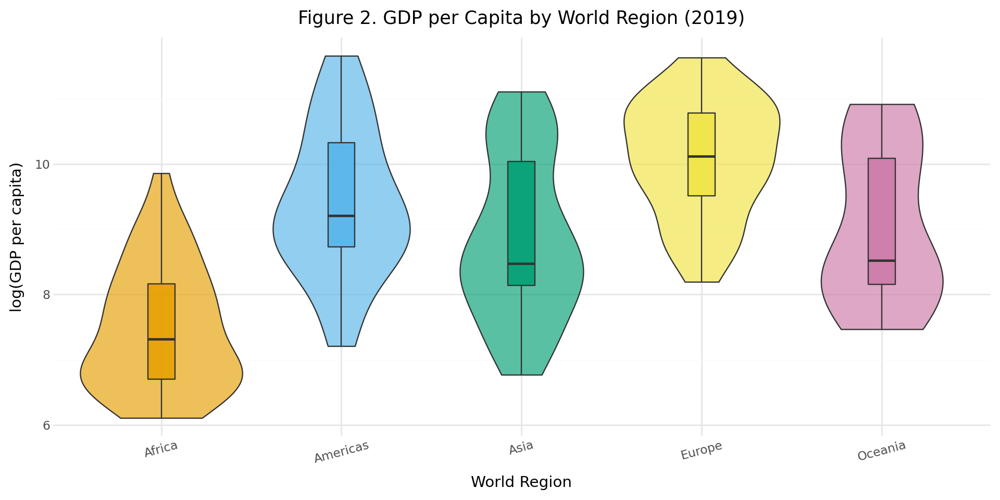
Figure 2. This figure is log GDP per capita by world region in 2019. Each violin shows the full income distribution. The inner box indicates the interquartile range. We can notice that European countries have the highest median income and the most compressed distribution; African countries have the lowest median. All regions shows the similar group spread, reflecting the coexistence of high-income and low-income countries within the same region is a common status. A question is raised that whether dist_equator in the regression models is partly functioning as a continent proxy, and this is a concern addressed formally in the region-dummies robustness check below.
Code
from plotnine import geom_point, geom_smooth, annotate, scale_color_manual
from scipy import stats as _stats
sub3 = df_an[["dist_equator", "agriculture_share", "region"]].dropna()
_r3, _p3 = _stats.pearsonr(sub3["dist_equator"], sub3["agriculture_share"])
_p3_txt = "< 0.001" if _p3 < 0.001 else f"= {_p3:.3f}"
# use scale_color_manual (not fill) — points use color aesthetic, must match
fig3 = (
ggplot(sub3, aes(x="dist_equator", y="agriculture_share",
color="region"))
+ geom_point(alpha=0.65, size=2)
+ geom_smooth(aes(group=1), method="lm", color="black",
linetype="dashed", se=True, size=0.9)
+ scale_color_manual(values=region_palette)
+ annotate("text", x=65, y=42,
label=f"r = {_r3:.2f} (p {_p3_txt})",
size=9, ha="right")
+ labs(
x="Distance from Equator (degrees)",
y="Agriculture Share (% of GDP)",
title="Figure 3. Distance from Equator vs Agriculture Share (2019)",
color="Region",
)
+ theme_minimal()
+ theme(figure_size=(9, 5))
)
fig3.show()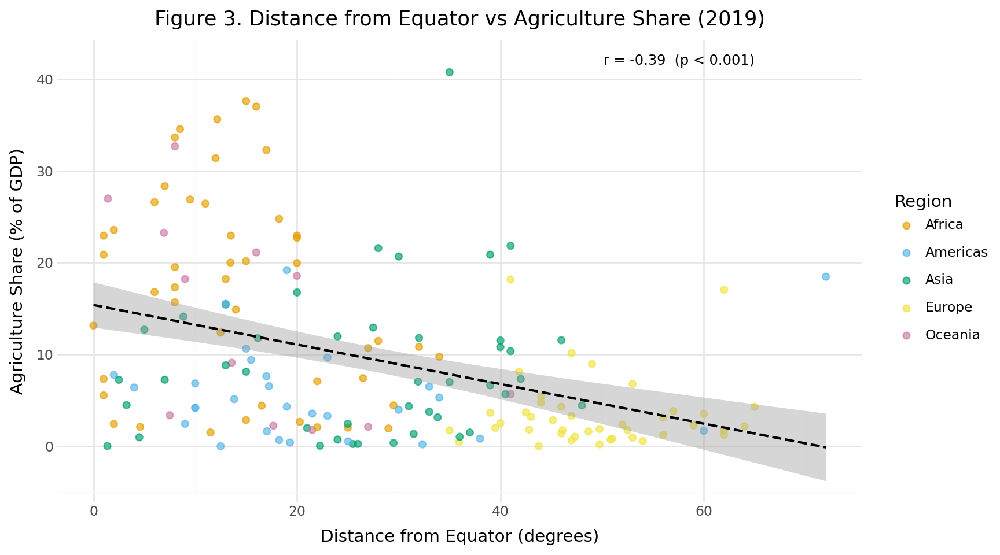
Figure 3. Agriculture share (% of GDP) versus distance from the equator, 2019. The negative slope (r = −0.39, p < 0.001) indicates that countries farther from the equator tend to have smaller agricultural sectors on average. Regional clustering is visible. We can see European countries (yellow) concentrate in the lower-right corner — high latitude, low agriculture share — while many African countries (orange) cluster near the equator with high agriculture shares, occupying the upper-left of the plot. This clustering means that some of the observed correlation could reflect continent-level historical and institutional differences that are merely correlated with latitude, a point returned to in the regression section.
Code
fig, ax = plt.subplots(figsize=(8, 5))
scatter_fit(ax, "dist_equator", "urbanization", df_an,
"Distance from equator (degrees)",
"Urbanisation (%)",
"Distance from Equator vs Urbanisation (2019)")
handles = [plt.Line2D([0], [0], marker="o", color="w",
markerfacecolor=c, markersize=8, label=r)
for r, c in REGION_COLORS.items()]
ax.legend(handles=handles, fontsize=7.5, loc="lower right",
framealpha=0.5, edgecolor="none")
plt.tight_layout()
plt.show()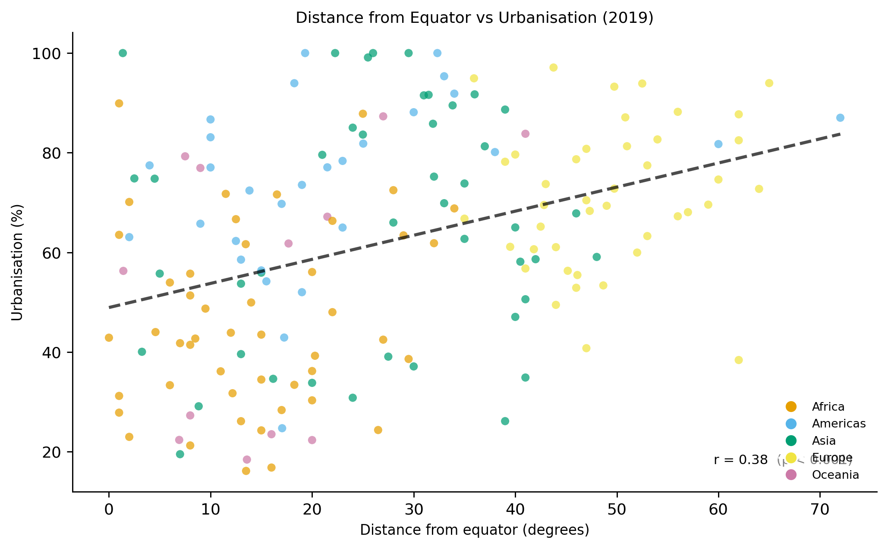
Figure 4. Distance from the equator versus urbanisation rate, 2019. The upward slope (r = 0.38, p < 0.001) indicates that countries farther from the equator tend to be more urbanised. As with Figure 3, the pattern is partly driven by strong regional clustering. We can see European countries (yellow) are both high-latitude and highly urbanised, while many low-latitude countries in Africa and Asia have lower urbanisation rates. The within-region scatter is wide, however, suggesting that latitude is not the only factor at play. Both the latitude-agriculture and latitude-urbanisation correlations should therefore be read as capturing a combination of climate gradient and regional context.
Code
# the classic Gallup/Sachs scatter: latitude vs income, coloured by region
fig, ax = plt.subplots(figsize=(8, 5))
scatter_fit(ax, "dist_equator", "log_gdp", df_an,
"Distance from equator (degrees)",
"log(GDP per capita)",
"Distance from Equator vs log(GDP per capita) (2019)")
handles = [plt.Line2D([0], [0], marker="o", color="w",
markerfacecolor=c, markersize=8, label=r)
for r, c in REGION_COLORS.items()]
ax.legend(handles=handles, fontsize=7.5, loc="lower right",
framealpha=0.5, edgecolor="none")
plt.tight_layout()
plt.show()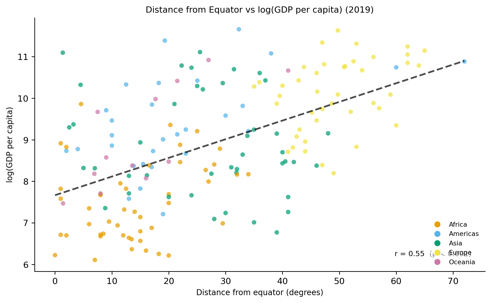
Figure 5. This graph is about the distance from the equator versus log GDP per capit in 2019. The positive slope (r = 0.55, p < 0.001) shows that farther the countries from the equator, higher income levels they may have. The positive slope in this figure is the association that the regression analysis will later try to explain. Regional clustering is again visible, which European countries in yellow are concentrated in the high-latitude, high-income corner, while many African countries in orange, sit near the equator at lower income levels. This figure motivates M1 in the regression, and the attenuation of this slope from M1 to M5 is the central empirical result of the paper.
Code
# split into two groups and compare — straightforward Welch t-test
ll = df_an.loc[df_an["landlocked"] == 1, "trade_share"].dropna()
coast = df_an.loc[df_an["landlocked"] == 0, "trade_share"].dropna()
fig, ax = plt.subplots(figsize=(5.5, 5))
bp = ax.boxplot([ll, coast], patch_artist=True,
labels=[f"Landlocked\n(n={len(ll)})",
f"Coastal\n(n={len(coast)})"],
medianprops={"color": "black", "linewidth": 2},
flierprops={"marker": "o", "markersize": 3, "alpha": 0.5})
bp["boxes"][0].set_facecolor("#E69F00"); bp["boxes"][0].set_alpha(0.75)
bp["boxes"][1].set_facecolor("#56B4E9"); bp["boxes"][1].set_alpha(0.75)
t_val, p_val = stats.ttest_ind(ll, coast, equal_var=False)
ax.text(0.5, 0.96,
f"Welch t = {t_val:.2f}, p {'< 0.001' if p_val < 0.001 else f'= {p_val:.3f}'}",
transform=ax.transAxes, ha="center", va="top", fontsize=9)
ax.set_ylabel("Trade (% of GDP)")
ax.set_title("Figure 6. Trade Openness by Landlocked Status (2019)")
plt.tight_layout()
plt.show()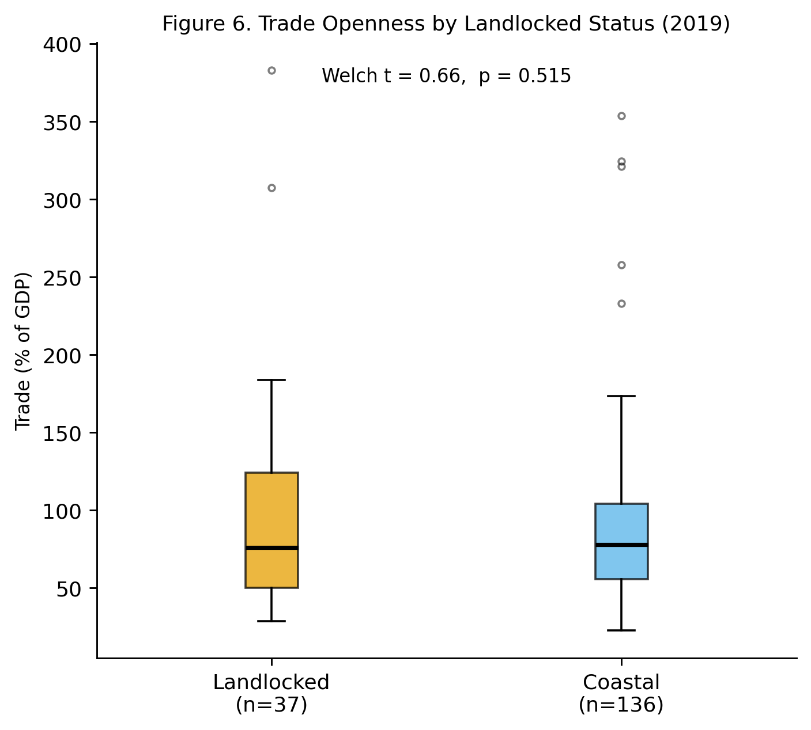
Figure 6. Trade openness by landlocked status in 2019. Trade openness is measured as total trade (% of GDP). The mean trade share is 97.0% for landlocked countries and 88.6% for coastal countries(grab from code). The distributions overlap substantially, and a Welch t-test finds no statistically significant difference (t = 0.66, p = 0.515).
Code
structure_specs = [
("trade_share", "Trade (% of GDP)", "Figure 7a. Trade Share vs log(GDP)"),
("urbanization", "Urbanisation (%)", "Figure 7b. Urbanisation vs log(GDP)"),
("agriculture_share", "Agriculture (% of GDP)", "Figure 7c. Agriculture Share vs log(GDP)"),
]
fig, axes = plt.subplots(1, 3, figsize=(15, 5))
for ax, (xcol, xlab, title) in zip(axes, structure_specs):
scatter_fit(ax, xcol, "log_gdp", df_an, xlab, "log(GDP per capita)", title)
fig.suptitle("Figures 7a–7c. Economic Structure vs log(GDP per Capita), 2019",
y=1.02, fontsize=11)
plt.tight_layout()
plt.show()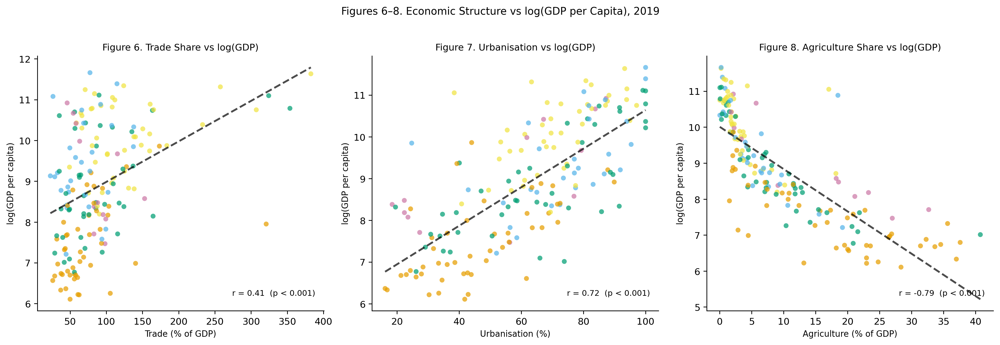
Figures 7a–7c. Each panel plots one of three economic structure variable against log GDP per capita in 2019. The three correlations differ substantially in strength but not to much. Agriculture share has the tightest negative relationship (r = −0.79, p < 0.001), consistent with Kuznets-style structural transformation, which is the more an economy still depends on primary-sector output, the lower its income level tends to be. Urbanisation is also strongly positive (r = 0.72, p < 0.001), reflecting the close link between city-based activity and income across countries. Trade openness is positive but considerably weaker (r = 0.41, p < 0.001) and more dispersed, which is a pattern that foreshadows its fragility once population size is controlled for in the regression, since trade/GDP is elevated for small, open economies regardless of development level.
Code
HMAP_VARS = ["dist_equator", "landlocked", "tropical",
"agriculture_share", "trade_share", "urbanization",
"log_gdp", "log_population"]
hv = [c for c in HMAP_VARS if c in df_an.columns]
corr_mat = df_an[hv].corr()
HMAP_LABELS = {
"dist_equator": "Dist. equator",
"landlocked": "Landlocked",
"tropical": "Tropical",
"agriculture_share": "Agric. share",
"trade_share": "Trade share",
"urbanization": "Urbanisation",
"log_gdp": "log(GDP)",
"log_population": "log(Pop.)",
}
fig, ax = plt.subplots(figsize=(8.5, 7))
im = ax.imshow(corr_mat.values, vmin=-1, vmax=1, cmap="RdBu_r", aspect="auto")
plt.colorbar(im, ax=ax, label="Pearson r", shrink=0.85)
labels = [HMAP_LABELS.get(c, c) for c in hv]
ax.set_xticks(range(len(hv))); ax.set_xticklabels(labels, rotation=35, ha="right")
ax.set_yticks(range(len(hv))); ax.set_yticklabels(labels)
for i in range(len(hv)):
for j in range(len(hv)):
v = corr_mat.iloc[i, j]
ax.text(j, i, f"{v:.2f}", ha="center", va="center",
fontsize=7.5, color="white" if abs(v) > 0.55 else "black")
ax.set_title("Figure 8. Pearson Correlation Matrix — Core Variables (2019)")
plt.tight_layout()
plt.show()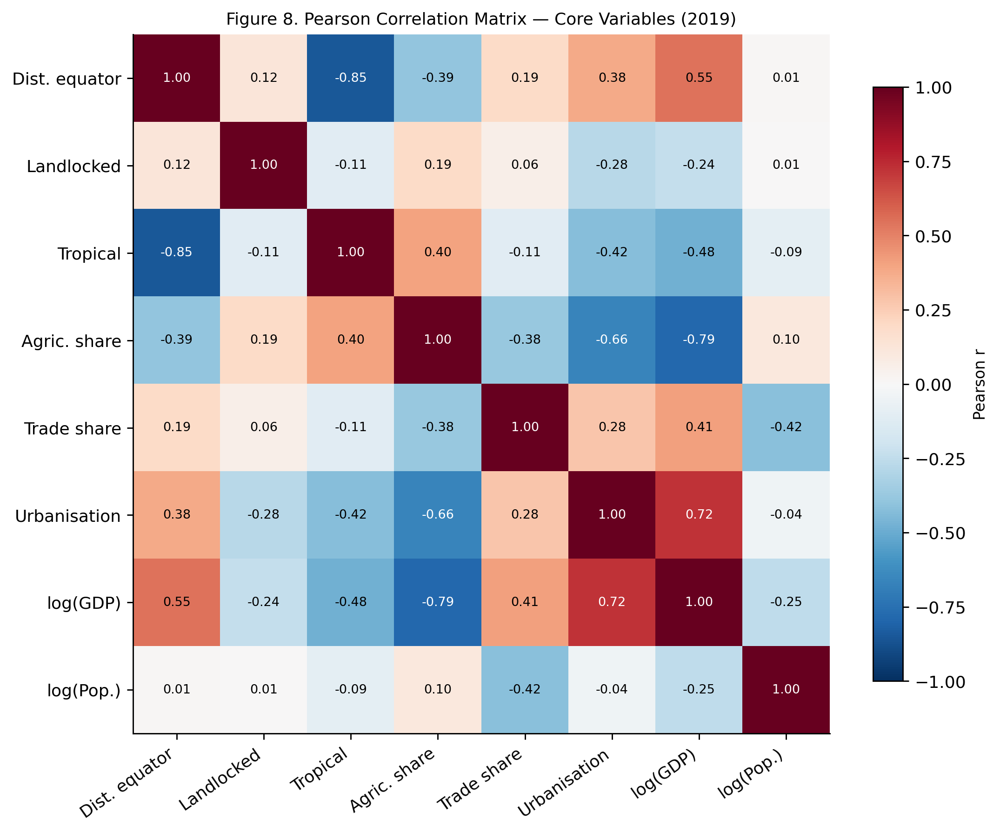
Figure 8. Pearson correlation matrix for all main variables in 2019. Each cell shows the correlation coefficient and the colour scale runs from strong negative to strong positive.
The scatterplots in Figures 3 and 4 illustrate the geographic patterns in economic structure. The countries located farther from the equator generally tend to have smaller agricultural sectors, while urbanisation tends to be higher. However, the relationships are not really tight, and there is still considerable variation across countries, indicates we should consider more aspects. Also, regional clustering is also visible in both plots. Many African countries appear in the lower-latitude, high-agriculture part, while many European countries are located at higher latitudes with relatively high levels of urbanisation. This suggests that what looks like a latitude effect may partly reflect broader regional differences that are correlated with geography.
Figure 5 looks at how distance from the equator relates to income levels across countries. Overall, there is a clear upward trend that countries farther from the equator tend to have higher log GDP per capita. The fitted line slopes upward and the correlation (r = 0.55) suggests a moderate positive relationship. The regional patterns are also quite visible in the scatter. Many European countries appear in the upper-right part of the plot, reflecting both high latitude and high income. Many African countries cluster closer to the equator and at lower income levels. At the same time, the points are fairly spread out, means that latitude alone cannot explain the large differences in income across countries.
Figure 6 compares trade openness between landlocked and coastal countries. At first look, the two distributions look quite similar. The boxes overlap heavily and the medians are close to each other. A Welch two-sample t-test finds no statistically significant difference in mean trade openness between landlocked and coastal countries (t = 0.66, p = 0.515). In other words, simply being landlocked does not appear to reduce trade openness in this cross-country snapshot.
Figures 7a–7c examine how economic structure relates to income. Trade openness and urbanisation are both positively associated with log GDP per capita, while the share of agriculture is negatively related to income. The scatter plots show these relationships clearly tight than my expectation, although the dispersion also suggests that structural variables alone cannot fully explain cross-country income differences.
Figure 8 provides a broader overview of the correlation structure among the main variables. Log GDP per capita is most strongly correlated with urbanisation (r = 0.72) and negatively correlated with the share of agriculture (r = −0.79). Trade openness shows a more moderate positive relationship with income (r = 0.41). The correlations among the three structure variables are noticeable but not extreme (for example, urbanisation and agriculture share have r = −0.66). None of these pairwise correlations are high enough to suggest serious multicollinearity, though I check this more formally with VIF in Table 4. As expected, distance from the equator and the tropical indicator are strongly negatively correlated (r = −0.85), since countries farther from the equator are less likely to lie within the tropical zone.
3.4 Statistical Testing
A. Pearson Correlation Tests
Code
# the six bivariate relationships that matter for the hypotheses
pairs = [
("dist_equator", "agriculture_share", "Dist. equator", "Agriculture share"),
("dist_equator", "urbanization", "Dist. equator", "Urbanisation"),
("dist_equator", "log_gdp", "Dist. equator", "log(GDP)"),
("trade_share", "log_gdp", "Trade share", "log(GDP)"),
("urbanization", "log_gdp", "Urbanisation", "log(GDP)"),
("agriculture_share", "log_gdp", "Agriculture share","log(GDP)"),
]
corr_rows = []
for x, y, xl, yl in pairs:
sub = df_an[[x, y]].dropna()
r, p = stats.pearsonr(sub[x], sub[y])
corr_rows.append({
"X variable": xl,
"Y variable": yl,
"n": len(sub),
"Pearson r": round(r, 3),
"p-value": "< 0.001" if p < 0.001 else f"{p:.3f}",
"Sig.": sig_stars(p),
})
tbl_corr = pd.DataFrame(corr_rows)
display(tbl_corr.style.set_caption("Table 2. Pearson Correlation Tests (* p<0.05 ** p<0.01 *** p<0.001)"))| X variable | Y variable | n | Pearson r | p-value | Sig. | |
|---|---|---|---|---|---|---|
| 0 | Dist. equator | Agriculture share | 173 | -0.391000 | < 0.001 | *** |
| 1 | Dist. equator | Urbanisation | 173 | 0.376000 | < 0.001 | *** |
| 2 | Dist. equator | log(GDP) | 173 | 0.546000 | < 0.001 | *** |
| 3 | Trade share | log(GDP) | 173 | 0.406000 | < 0.001 | *** |
| 4 | Urbanisation | log(GDP) | 173 | 0.721000 | < 0.001 | *** |
| 5 | Agriculture share | log(GDP) | 173 | -0.788000 | < 0.001 | *** |
B. Pairwise Correlations among Structure Variables
Code
struct_vars = ["agriculture_share", "trade_share", "urbanization"]
struct_labels = {
"agriculture_share": "Agriculture share",
"trade_share": "Trade share",
"urbanization": "Urbanisation",
}
sub_s = df_an[struct_vars].dropna()
n_struct = len(sub_s)
rows_s = []
for i, x in enumerate(struct_vars):
for y in struct_vars[i + 1:]:
r, p = stats.pearsonr(sub_s[x], sub_s[y])
rows_s.append({
"Variable 1": struct_labels[x],
"Variable 2": struct_labels[y],
"n": n_struct,
"Pearson r": round(r, 3),
"p-value": "< 0.001" if p < 0.001 else f"{p:.3f}",
})
tbl_struct = pd.DataFrame(rows_s)
display(tbl_struct.style.set_caption("Table 3. Pairwise Correlations among Structure Variables (supports multicollinearity assessment)"))| Variable 1 | Variable 2 | n | Pearson r | p-value | |
|---|---|---|---|---|---|
| 0 | Agriculture share | Trade share | 173 | -0.379000 | < 0.001 |
| 1 | Agriculture share | Urbanisation | 173 | -0.657000 | < 0.001 |
| 2 | Trade share | Urbanisation | 173 | 0.277000 | < 0.001 |
Code
# VIF > 10 would be a problem; we expect these to be fine given moderate correlations
X_vif = sub_s.copy()
X_vif_const = sm.add_constant(X_vif)
vif_vals = [variance_inflation_factor(X_vif_const.values, i + 1)
for i in range(len(struct_vars))]
vif_df = pd.DataFrame({
"Variable": [struct_labels[v] for v in struct_vars],
"VIF": [round(v, 2) for v in vif_vals],
})
display(vif_df.style.set_caption("Table 4. Variance Inflation Factors — Structure Variables (threshold: VIF < 5)"))| Variable | VIF | |
|---|---|---|
| 0 | Agriculture share | 1.900000 |
| 1 | Trade share | 1.170000 |
| 2 | Urbanisation | 1.760000 |
C. Welch Two-Sample T-Tests: Landlocked vs Coastal Countries
Code
ll_grp = df_an[df_an["landlocked"] == 1]
coast_grp = df_an[df_an["landlocked"] == 0]
ttest_rows = []
for var, lab in [("trade_share", "Trade share"), ("log_gdp", "log(GDP)")]:
g1, g2 = ll_grp[var].dropna(), coast_grp[var].dropna()
t_val, p_val = stats.ttest_ind(g1, g2, equal_var=False)
ttest_rows.append({
"Variable": lab,
"Landlocked mean": round(g1.mean(), 3),
"Coastal mean": round(g2.mean(), 3),
"Difference (C−L)": round(g2.mean() - g1.mean(), 3),
"n (landlocked)": len(g1),
"n (coastal)": len(g2),
"t (Welch)": round(t_val, 3),
"p-value": "< 0.001" if p_val < 0.001 else f"{p_val:.3f}",
"Sig.": sig_stars(p_val),
})
tbl_ttest = pd.DataFrame(ttest_rows)
display(tbl_ttest.style.set_caption("Table 5. Welch T-Tests: Landlocked vs Coastal Countries (* p<0.05 ** p<0.01 *** p<0.001)"))| Variable | Landlocked mean | Coastal mean | Difference (C−L) | n (landlocked) | n (coastal) | t (Welch) | p-value | Sig. | |
|---|---|---|---|---|---|---|---|---|---|
| 0 | Trade share | 96.960000 | 88.624000 | -8.336000 | 37 | 136 | 0.657000 | 0.515 | |
| 1 | log(GDP) | 8.229000 | 9.065000 | 0.836000 | 37 | 136 | -3.098000 | 0.003 | ** |
The correlation results in Table 2 are broadly consistent with what we already saw in the scatterplots earlier. Countries that are located farther from the equator tend to have smaller agricultural sectors and higher levels of urbanisation, and both of these relationships are statistically significant in the correlation tests. The three structure variables are also significantly related to log GDP per capita in the expected directions: countries with higher urbanisation tend to have higher income levels, while countries where agriculture makes up a larger share of the economy tend to have lower income levels. Trade openness is also positively correlated with income, although the relationship is somewhat weaker.
At the same time, it is important that these are simple bivariate correlations. They do not control for other factors and may partly reflect broader regional or historical patterns that happen to be associated with these variables. The correlations show that these variables do not establish a causal relationship.
Before estimating the regression models, I examine how closely the three structure variables relate to one another. Table 3 reports the pairwise Pearson correlations among agriculture share, trade share, and urbanisation. The correlations are moderate in size and do not raise immediate concern. Table 4 provides a more formal assessment using variance inflation factors (VIFs). All VIF values fall comfortably below the conventional threshold of 10, suggesting that multicollinearity is unlikely to pose a serious problem when these variables are included jointly in a regression model.
Table 5 reports Welch two-sample t-tests comparing landlocked and coastal countries on key outcomes. Landlocked countries have significantly lower average log GDP per capita (p < 0.05), but the difference in trade openness is not statistically significant (p = 0.515). The latter result is not particularly surprising given the composition of the landlocked group in this sample, which includes relatively high-income European economies such as Switzerland and Austria alongside much poorer landlocked countries in sub-Saharan Africa and Central Asia. This heterogeneity limits what the raw group comparison can tell us about the landlocked-trade relationship. A more controlled test — conditioning on income level and regional context — is presented in the conditional regression that follows.
Code
# H2 robustness: does landlocked status predict lower trade openness
# once income (log_gdp) and region are held constant?
# Use df_an directly here; reg is defined later in the Regression section.
_h2_vars = ["trade_share", "landlocked", "log_gdp", "log_population", "region"]
reg_h2 = df_an.dropna(subset=_h2_vars).copy()
h2_model = smf.ols(
"trade_share ~ landlocked + log_gdp + log_population + C(region)",
data=reg_h2).fit(cov_type="HC3")
ll_coef = float(round(h2_model.params["landlocked"], 3))
ll_pval = float(h2_model.pvalues["landlocked"])
ll_se = float(round(h2_model.bse["landlocked"], 3))
h2_summary = pd.DataFrame({
"": ["Formula", "n", "R²", "Landlocked coef", "SE", "p-value"],
"Value": [
"trade_share ~ landlocked + log_gdp + log_population + C(region)",
int(h2_model.nobs),
f"{h2_model.rsquared:.3f}",
f"{ll_coef:.3f}",
f"{ll_se:.3f}",
f"{ll_pval:.3f} {sig_stars(ll_pval) or '(n.s.)'}",
]
})
display(h2_summary.style.set_caption("H2 Conditional Regression: trade_share ~ landlocked + controls").hide(axis="index"))| Value | |
|---|---|
| Formula | trade_share ~ landlocked + log_gdp + log_population + C(region) |
| n | 173 |
| R² | 0.386 |
| Landlocked coef | 9.018 |
| SE | 10.186 |
| p-value | 0.376 (n.s.) |
H2 conditional result After controlling for income level (log GDP per capita), population size, and region fixed effects, the landlocked coefficient in the trade-share regression is 9.018 (SE = 10.186, p = 0.376). This is not statistically significant. So even when we condition on income and regional context, the data do not show that landlocked countries have lower trade openness. In a way, this is a more informative test than the raw group comparison — it holds more things constant — but the conclusion is the same: there is no clear evidence in this sample that landlocked status depresses trade share.
3.5 Regression Analysis
To explore whether the geography-income association changes once economic structure is taken into account, I estimate four nested OLS models, adding variables sequentially. All models use the same complete-case sample, so any changes in the coefficients reflect the specification, not a change in who is in the sample. Robust standard errors are used throughout. A fifth model (M5) adds region fixed effects as a robustness check for regional confounding; the full attenuation trajectory from M1 to M5 is shown in Figure 9 in the robustness section that follows.
Code
# All four models use the exact same rows so R² changes reflect spec, not sample
REG_VARS = ["log_gdp", "dist_equator", "landlocked",
"agriculture_share", "trade_share", "urbanization", "log_population"]
reg = df_an.dropna(subset=REG_VARS).copy()
n_reg = len(reg)
m1 = smf.ols("log_gdp ~ dist_equator", # geography only
data=reg).fit(cov_type="HC3")
m2 = smf.ols("log_gdp ~ dist_equator + landlocked", # + landlocked
data=reg).fit(cov_type="HC3")
m3 = smf.ols( # + economic structure
"log_gdp ~ dist_equator + landlocked + agriculture_share + trade_share + urbanization",
data=reg).fit(cov_type="HC3")
m4 = smf.ols( # + population size
"log_gdp ~ dist_equator + landlocked + agriculture_share + trade_share"
" + urbanization + log_population",
data=reg).fit(cov_type="HC3")
# Pre-compute inline-referenced values
m1_dist = round(m1.params["dist_equator"], 3)
m2_dist = round(m2.params["dist_equator"], 3)
m3_dist = round(m3.params["dist_equator"], 3)
m4_dist = round(m4.params["dist_equator"], 3)
m2_ll = round(m2.params["landlocked"], 3)
m3_ll = round(m3.params["landlocked"], 3)
m4_ll = round(m4.params["landlocked"], 3)
m1_r2 = round(m1.rsquared, 3)
m2_r2 = round(m2.rsquared, 3)
m3_r2 = round(m3.rsquared, 3)
m4_r2 = round(m4.rsquared, 3)
dist_attn_pct = int(round((1 - m3_dist / m1_dist) * 100)) if m1_dist != 0 else 0
for nm, m in [("M1", m1), ("M2", m2), ("M3", m3), ("M4", m4)]:
print(f" {nm}: R² = {m.rsquared:.3f}, Adj. R² = {m.rsquared_adj:.3f}, "
f"n = {int(m.nobs)}") M1: R² = 0.299, Adj. R² = 0.294, n = 173
M2: R² = 0.394, Adj. R² = 0.387, n = 173
M3: R² = 0.762, Adj. R² = 0.755, n = 173
M4: R² = 0.789, Adj. R² = 0.781, n = 173Code
ROW_ORDER = ["Intercept", "dist_equator", "landlocked",
"agriculture_share", "trade_share", "urbanization", "log_population"]
col_data = {}
for nm, m in [("M1", m1), ("M2", m2), ("M3", m3), ("M4", m4)]:
d = {pred: fmt_coef(m.params[pred], m.bse[pred], m.pvalues[pred])
for pred in m.params.index}
d["_N"] = str(int(m.nobs))
d["_R2"] = f"{m.rsquared:.3f}"
d["_adjR2"] = f"{m.rsquared_adj:.3f}"
col_data[nm] = d
tbl_reg = pd.DataFrame(col_data).fillna("—")
ordered = [p for p in ROW_ORDER if p in tbl_reg.index]
extra = [p for p in tbl_reg.index if p not in ROW_ORDER and not p.startswith("_")]
stat_rows = [r for r in ["_N", "_R2", "_adjR2"] if r in tbl_reg.index]
tbl_reg = tbl_reg.loc[ordered + extra + stat_rows]
tbl_reg.index = [
PRED_LABELS.get(p, p) if not p.startswith("_")
else {"_N": "N", "_R2": "R²", "_adjR2": "Adj. R²"}[p]
for p in tbl_reg.index
]
tbl_reg.columns.name = None
tbl_reg.index.name = "Predictor"
display(tbl_reg.style.set_caption(
f"Table 6. OLS Regression — Outcome: log(GDP per capita), HC3 Standard Errors"
f" | Format: coef*** (SE) * p<0.05 ** p<0.01 *** p<0.001 | n = {n_reg}"))| M1 | M2 | M3 | M4 | |
|---|---|---|---|---|
| Predictor | ||||
| (Intercept) | 7.665*** (0.175) | 7.812*** (0.171) | 7.689*** (0.284) | 9.715*** (0.565) |
| Dist. equator (deg) | 0.045*** (0.005) | 0.048*** (0.004) | 0.022*** (0.004) | 0.023*** (0.004) |
| Landlocked | — | -1.084*** (0.193) | -0.425** (0.153) | -0.396** (0.145) |
| Agriculture share (%) | — | — | -0.066*** (0.009) | -0.066*** (0.008) |
| Trade share (%) | — | — | 0.003* (0.001) | 0.001 (0.002) |
| Urbanisation (%) | — | — | 0.017*** (0.004) | 0.018*** (0.003) |
| log(Population) | — | — | — | -0.122*** (0.029) |
| N | 173 | 173 | 173 | 173 |
| R² | 0.299 | 0.394 | 0.762 | 0.789 |
| Adj. R² | 0.294 | 0.387 | 0.755 | 0.781 |
Model results:
M1 (baseline, R² = 0.299). The first model uses only distance from the equator to predict log GDP per capita. The coefficient is 0.045 (SE = 0.005, p < 0.001), so countries farther from the equator do tend to have higher income levels in this sample. Latitude alone accounts for about 30% of the income variation across 173 countries. That is a fairly strong bivariate relationship for a single geographic variable. Even so, it would be a mistake to read too much into it, which is the distance from the equator is almost certainly picking up many other things at once, including climate gradients, historical settlement patterns, disease burden, and institutions, all of which also vary with latitude. M1 just sets a baseline.
M2 (adding landlocked status, R² = 0.394). Adding landlocked status raises R² from 0.299 to 0.394. The landlocked coefficient is -1.084 (SE = 0.193, p < 0.001), a fairly large negative association — landlocked countries are on average associated with substantially lower income, holding latitude constant. What is interesting is that the latitude coefficient barely moves, going from 0.045 to 0.048. The two geography variables seem to be picking up somewhat different things, not just the same underlying constraint.
M3 (adding economic structure, R² = 0.762). Adding the three structure variables in M3 produces the largest single jump in fit across the whole sequence. R² rises from 0.394 to 0.762. The geography coefficients also decrease a lot. The latitude coefficient falls from 0.048 to 0.022 (SE = 0.004, p < 0.001), which is about a 51% reduction relative to M1. The landlocked coefficient drops from -1.084 to -0.425 (SE = 0.153, p < 0.01). Once we account for how economies are structured, geography explains much less income variation on its own.
These results should still be read with caution. The regressions are purely observational, and institutional or historical factors could be driving both economic structure and income simultaneously. The attenuation pattern is consistent with the hypothesis that structural differences account for part of the geography-income correlation.
The structure variables themselves tell a clear story. Agriculture share is -0.066 (SE = 0.009, p < 0.001) — more agricultural economies tend to have lower income levels. Urbanisation is positive at 0.017 (SE = 0.004, p < 0.001). Trade share is also positive at 0.003 (SE = 0.001, p < 0.05), though less precisely estimated than the other two. All of this matches what we already saw in the descriptive plots.
M4 (adding log population, R² = 0.789). Adding log population pushes R² a bit further to 0.789. The main geography coefficients barely change — latitude stays at 0.023 (SE = 0.004, p < 0.001) and landlocked at -0.396 (SE = 0.145, p < 0.01) — so the attenuation from M3 is not being reversed.
What does change is trade share. It drops to 0.001 and is no longer statistically significant. This makes sense since· trade as a share of GDP tends to be mechanically high for small, open economies like city-states or entrepôt economies regardless of development level. Once population is included as a rough proxy for country size, that mechanical relationship is partly absorbed. Agriculture share and urbanisation, by contrast, stay stable and strongly significant.
Log population itself enters at -0.122 (SE = 0.029, p < 0.001). Larger countries in this sample tend to have lower GDP per capita once the other variables are held constant. This probably reflects the mix of large lower-income countries in the dataset more than any direct effect of country size on income.
3.6 Region Fixed Effects (M5)
Recall the EDA part. The previous models suggest that geography and economic structure are both related to income differences across countries. However, the descriptive analysis also showed strong regional clustering in both income (Figure 2) and the geography–structure relationships (Figures 3–4). This raises the possibility that the latitude effect partly reflects broader continent-level differences rather than a direct geographic mechanism. To examine this more carefully, Model 5 adds region fixed effects to the M4 specification.
Code
# M5: M4 + region fixed effects
m5 = smf.ols(
"log_gdp ~ dist_equator + landlocked + agriculture_share + trade_share"
" + urbanization + log_population + C(region)",
data=reg).fit(cov_type="HC3")
m5_dist = float(round(m5.params["dist_equator"], 3))
m5_ll = float(round(m5.params.get("landlocked", float("nan")), 3))
m5_r2 = float(round(m5.rsquared, 3))
dist_change_m4_m5 = float(round(m5_dist - m4_dist, 3))
dist_pct_m5 = int(round((1 - m5_dist / m1_dist) * 100)) if m1_dist != 0 else 0
# Region FE coefficients (relative to Africa baseline)
region_coefs = {k: round(v, 3)
for k, v in m5.params.items()
if k.startswith("C(region)")}
region_rows = []
for k, v in region_coefs.items():
label = k.replace("C(region)[T.", "").rstrip("]")
pv = m5.pvalues[k]
region_rows.append({"Region": label, "Coef. vs Africa": f"{v:+.3f}", "Sig.": sig_stars(pv) or "n.s."})
display(pd.DataFrame(region_rows).style.set_caption(
f"M5 Region Fixed Effects (Africa = baseline) — "
f"dist_equator: {m5_dist} (M4: {m4_dist}), R²: {m5_r2}, attenuation M1→M5: {dist_pct_m5}%"
).hide(axis="index"))| Region | Coef. vs Africa | Sig. |
|---|---|---|
| Americas | +0.529 | ** |
| Asia | +0.372 | * |
| Europe | +0.711 | ** |
| Oceania | +0.838 | *** |
Code
# Extend the attenuation trace to include M5
fig, axes = plt.subplots(1, 2, figsize=(11, 4.5),
gridspec_kw={"wspace": 0.4})
fig.suptitle(
"Figure 9. Geography Coefficients — M1 to M5 (including Region FE Robustness)",
fontsize=11, y=1.02)
models_full = [("M1", m1), ("M2", m2), ("M3", m3), ("M4", m4), ("M5\n(+Region)", m5)]
ax = axes[0]
for i, (nm, m) in enumerate(models_full):
c = m.params["dist_equator"]
lo, hi = m.conf_int().loc["dist_equator"]
color = "#CC3333" if nm.startswith("M5") else "#2E6DA4"
ax.errorbar(i, c, yerr=[[c - lo], [hi - c]],
fmt="D" if nm.startswith("M5") else "o",
color=color, ms=9, capsize=6, capthick=1.5, elinewidth=1.8, zorder=3)
star = sig_stars(m.pvalues["dist_equator"])
if star:
ax.text(i, hi + 0.003, star, ha="center", va="bottom", fontsize=10)
ax.axhline(0, color="black", lw=0.8, ls="--", alpha=0.6)
ax.set_xticks(range(len(models_full)))
ax.set_xticklabels([nm for nm, _ in models_full], fontsize=8.5)
ax.set_ylabel("Coefficient — dist. equator")
ax.set_title("Distance from Equator")
ax.set_xlabel("Model")
models_ll = [("M2", m2), ("M3", m3), ("M4", m4), ("M5\n(+Region)", m5)]
ax = axes[1]
for i, (nm, m) in enumerate(models_ll):
c = m.params["landlocked"]
lo, hi = m.conf_int().loc["landlocked"]
color = "#CC3333" if nm.startswith("M5") else "#D45F3B"
ax.errorbar(i, c, yerr=[[c - lo], [hi - c]],
fmt="D" if nm.startswith("M5") else "s",
color=color, ms=9, capsize=6, capthick=1.5, elinewidth=1.8, zorder=3)
star = sig_stars(m.pvalues["landlocked"])
if star:
offset = -0.04 if c < 0 else 0.003
va = "top" if c < 0 else "bottom"
ref = lo if c < 0 else hi
ax.text(i, ref + offset, star, ha="center", va=va, fontsize=10)
ax.axhline(0, color="black", lw=0.8, ls="--", alpha=0.6)
ax.set_xticks(range(len(models_ll)))
ax.set_xticklabels([nm for nm, _ in models_ll], fontsize=8.5)
ax.set_ylabel("Coefficient — landlocked")
ax.set_title("Landlocked")
ax.set_xlabel("Model")
plt.tight_layout()
plt.show()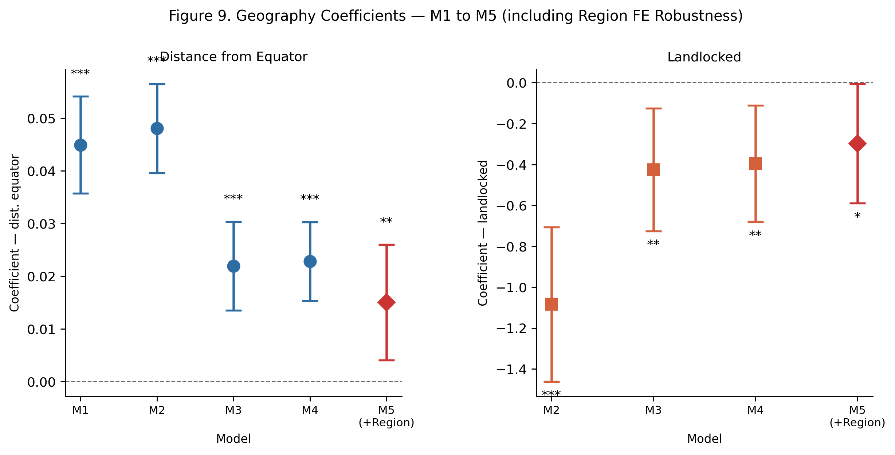
Figure 9. Geography coefficients across nested models M1–M5. The left panel traces the dist_equator coefficient; the right panel traces the landlocked penalty. Each point is one model; M5 (red diamond) adds region fixed effects. Error bars show 95% CI based on HC3 standard errors.
Code
# Concise comparison table: M4 vs M5 for the key geography and structure variables
compare_m5_vars = ["dist_equator", "landlocked", "agriculture_share",
"urbanization", "log_population"]
m5_rows = []
for v in compare_m5_vars:
c4, p4 = m4.params[v], m4.pvalues[v]
c5, p5 = m5.params[v], m5.pvalues[v]
m5_rows.append({
"Predictor": PRED_LABELS.get(v, v),
"M4 coef": f"{c4:.3f}{sig_stars(p4)}",
"M5 coef": f"{c5:.3f}{sig_stars(p5)}",
"Change": f"{c5 - c4:+.3f}",
})
m5_tbl = pd.DataFrame(m5_rows)
display(m5_tbl.style.set_caption(
f"Table 6b. M4 vs M5 Key Coefficients (M5 adds region dummies)"
f" | R²: M4 = {m4_r2}, M5 = {m5_r2} | attenuation M1→M5: {dist_pct_m5}%"))| Predictor | M4 coef | M5 coef | Change | |
|---|---|---|---|---|
| 0 | Dist. equator (deg) | 0.023*** | 0.015** | -0.008 |
| 1 | Landlocked | -0.396** | -0.298* | +0.098 |
| 2 | Agriculture share (%) | -0.066*** | -0.060*** | +0.006 |
| 3 | Urbanisation (%) | 0.018*** | 0.017*** | -0.000 |
| 4 | log(Population) | -0.122*** | -0.085* | +0.037 |
In Model 5, the dist_equator coefficient drops from 0.023 in M4 to 0.015 — a reduction of 0.008. R² rises from 0.789 to 0.812, so broad continental groupings do absorb some additional income variation beyond what the structural variables already explain. That said, the latitude coefficient is still positive and statistically significant in M5. That matters: it means latitude is not simply standing in for the Africa-versus-Europe contrast. Some part of the geography signal persists even within regions. The landlocked coefficient also stays negative at -0.298, though it is smaller than in M4. Counting everything from M1 to M5, the total attenuation of the latitude coefficient is about 67%. Table 6b has the full comparison.
Code
preds_plot = [p for p in ["dist_equator", "landlocked", "agriculture_share",
"trade_share", "urbanization", "log_population"]
if p in m4.params.index]
coefs = np.array([m4.params[p] for p in preds_plot])
ci_lo = np.array([m4.conf_int().loc[p, 0] for p in preds_plot])
ci_hi = np.array([m4.conf_int().loc[p, 1] for p in preds_plot])
pvals = np.array([m4.pvalues[p] for p in preds_plot])
xerr = np.array([coefs - ci_lo, ci_hi - coefs])
labels = [PRED_LABELS.get(p, p) for p in preds_plot]
colors = ["#27AE60" if c > 0 else "#C0392B" for c in coefs] # green = positive, red = negative
fig, ax = plt.subplots(figsize=(8, 4.5))
ax.barh(range(len(preds_plot)), coefs, color=colors, alpha=0.82,
xerr=xerr, error_kw={"elinewidth": 1.5, "capsize": 5, "ecolor": "#555"})
ax.axvline(0, color="black", lw=0.9, ls="--")
ax.set_yticks(range(len(preds_plot)))
ax.set_yticklabels(labels, fontsize=9)
ax.set_xlabel("Coefficient (log GDP per capita, ±95% CI)")
ax.set_title(
f"Figure 10. M4 Full Coefficient Plot — HC3 SEs, n = {int(m4.nobs)}, "
f"R\u00b2 = {m4_r2}")
for i, pv in enumerate(pvals):
star = sig_stars(pv)
if star:
ax.text(ci_hi[i] + 0.01, i, f" {star}", va="center", fontsize=9)
plt.tight_layout()
plt.show()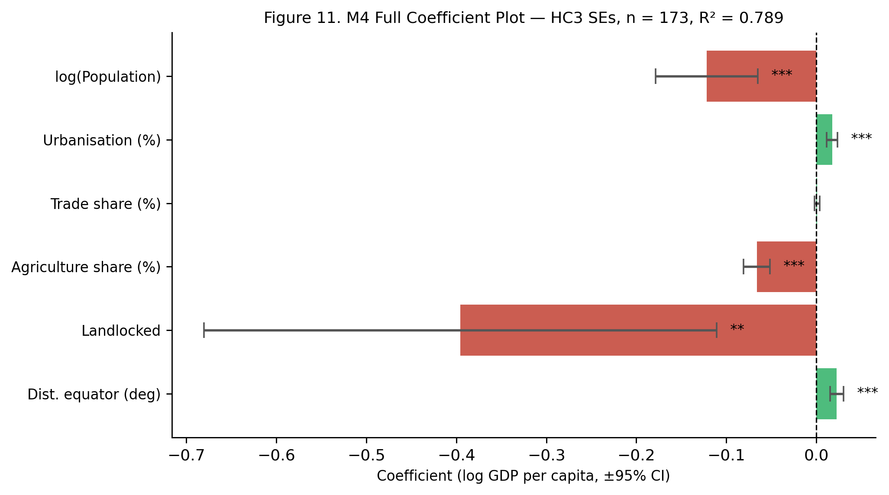
Figure 10. Coefficient plot for the full model (M4), with 95% confidence intervals based on heteroskedasticity-robust standard errors. Green bars indicate positive partial associations with log GDP per capita; red bars indicate negative ones.
3.7 Residual Diagnostics
Code
import scipy.stats as scipy_stats
fig, axes = plt.subplots(1, 2, figsize=(11, 4.5))
fig.suptitle("Figure 11. Residual Diagnostics — Model M4", fontsize=11, y=1.02)
fitted_m4 = m4.fittedvalues
resid_m4 = m4.resid
# Residuals vs. Fitted
axes[0].scatter(fitted_m4, resid_m4, alpha=0.55, s=22,
color="#2E6DA4", edgecolors="none")
axes[0].axhline(0, color="black", lw=0.9, ls="--", alpha=0.7)
# Add a lowess smoother line to reveal any systematic curvature
from statsmodels.nonparametric.smoothers_lowess import lowess
lw_pts = lowess(resid_m4, fitted_m4, frac=0.45, return_sorted=True)
axes[0].plot(lw_pts[:, 0], lw_pts[:, 1], color="#D45F3B", lw=2, label="LOWESS")
axes[0].legend(fontsize=8)
axes[0].set_xlabel("Fitted values (log GDP per capita)")
axes[0].set_ylabel("Residuals")
axes[0].set_title("a) Residuals vs. Fitted")
# Normal Q-Q plot
(osm, osr), (slope, intercept, r_sq) = scipy_stats.probplot(resid_m4, dist="norm")
axes[1].scatter(osm, osr, alpha=0.55, s=22, color="#2E6DA4", edgecolors="none")
axes[1].plot([min(osm), max(osm)],
[slope * min(osm) + intercept, slope * max(osm) + intercept],
color="black", lw=1.5, ls="--")
axes[1].set_xlabel("Theoretical quantiles")
axes[1].set_ylabel("Sample quantiles")
axes[1].set_title("b) Normal Q-Q Plot of Residuals")
plt.tight_layout()
plt.show()
# Identify the five observations with the largest absolute residuals
reg["abs_resid"] = m4.resid.abs()
top5 = (reg.nlargest(5, "abs_resid")[["country", "dist_equator", "landlocked",
"agriculture_share", "trade_share",
"urbanization", "log_gdp"]]
.assign(m4_resid=m4.resid[reg.nlargest(5, "abs_resid").index].values)
.round(3))
display(top5.reset_index(drop=True).style.set_caption("Table 7. Five Largest Absolute Residuals (M4)"))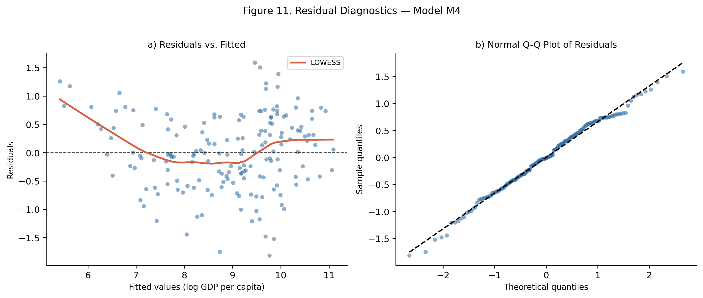
| country | dist_equator | landlocked | agriculture_share | trade_share | urbanization | log_gdp | m4_resid | |
|---|---|---|---|---|---|---|---|---|
| 0 | Djibouti | 11.500000 | 0 | 1.519000 | 320.939000 | 71.742000 | 7.951000 | -1.817000 |
| 1 | Lesotho | 29.500000 | 1 | 4.464000 | 140.517000 | 38.604000 | 6.987000 | -1.752000 |
| 2 | Faroe Islands | 62.000000 | 0 | 17.051000 | 108.623000 | 38.395000 | 11.052000 | 1.588000 |
| 3 | Jordan | 31.000000 | 0 | 4.372000 | 85.688000 | 91.516000 | 8.336000 | -1.524000 |
| 4 | United States | 38.000000 | 0 | 0.839000 | 26.454000 | 80.130000 | 11.078000 | 1.503000 |
Figure 11. Residual diagnostics for model M4. Panel (a) plots residuals against fitted values; the LOWESS smoother (red line) gives a visual check for systematic curvature or heteroskedasticity. Panel (b) is a normal Q-Q plot. Table 7 lists the five countries with the largest absolute residuals.
The residuals vs. fitted plot in panel (a) shows no strong systematic curvature, suggesting the linear specification is a reasonable approximation. Cross-country data frequently exhibit heteroskedasticity due to large structural differences between countries. For this reason, all regressions use HC3 heteroskedasticity-robust standard errors. The Q-Q plot in panel (b) shows approximate normality in the center of the distribution, with mild deviations in the upper and lower tails. Such tail deviations are common in cross-country datasets and do not materially affect inference when heteroskedasticity-robust standard errors are used.
Code
# Drop the 3 worst outliers and refit — if coefficients barely move, the story holds
top3_idx = reg["abs_resid"].nlargest(3).index
top3_countries = reg.loc[top3_idx, "country"].tolist()
reg_sens = reg.drop(index=top3_idx).copy()
n_sens = len(reg_sens)
m4_sens = smf.ols(
"log_gdp ~ dist_equator + landlocked + agriculture_share + trade_share"
" + urbanization + log_population",
data=reg_sens).fit(cov_type="HC3")
# Compare key coefficients
compare_vars = ["dist_equator", "landlocked", "agriculture_share",
"urbanization", "trade_share"]
sens_rows = []
for v in compare_vars:
c_full = m4.params[v]
c_sens = m4_sens.params[v]
p_full = m4.pvalues[v]
p_sens = m4_sens.pvalues[v]
sens_rows.append({
"Predictor": PRED_LABELS.get(v, v),
"M4 (full)": f"{c_full:.3f}{sig_stars(p_full)}",
"M4 (−3 outliers)": f"{c_sens:.3f}{sig_stars(p_sens)}",
"Change": f"{c_sens - c_full:+.3f}",
})
sens_df = pd.DataFrame(sens_rows)
display(sens_df.style.set_caption(
f"Table 8. Sensitivity Check — M4 Coefficients With and Without"
f" the Three Largest-Residual Countries ({', '.join(top3_countries)})"
f" | Full n = {n_reg}, Restricted n = {n_sens}"))| Predictor | M4 (full) | M4 (−3 outliers) | Change | |
|---|---|---|---|---|
| 0 | Dist. equator (deg) | 0.023*** | 0.019*** | -0.003 |
| 1 | Landlocked | -0.396** | -0.328* | +0.067 |
| 2 | Agriculture share (%) | -0.066*** | -0.070*** | -0.003 |
| 3 | Urbanisation (%) | 0.018*** | 0.017*** | -0.000 |
| 4 | Trade share (%) | 0.001 | 0.002* | +0.001 |
Code
_stable = []
_shifted = []
for v in ["dist_equator", "landlocked", "agriculture_share", "urbanization"]:
c_full = m4.params[v]
c_sens = m4_sens.params[v]
p_full = m4.pvalues[v]
p_sens = m4_sens.pvalues[v]
pct_chg = abs((c_sens - c_full) / c_full) * 100 if c_full != 0 else float("nan")
same_sig = (p_full < 0.05) == (p_sens < 0.05)
label = PRED_LABELS.get(v, v)
if pct_chg < 20 and same_sig:
_stable.append(label)
else:
_shifted.append(f"{label} ({pct_chg:.0f}% change)")
print("Stable coefficients (<20% change, same significance):", ", ".join(_stable) or "none")
print("Shifted coefficients (≥20% change or significance flip):", ", ".join(_shifted) or "none")Stable coefficients (<20% change, same significance): Dist. equator (deg), Landlocked, Agriculture share (%), Urbanisation (%)
Shifted coefficients (≥20% change or significance flip): noneTable 8 shows the results directly. Variables classed as stable (less than 20% coefficient change and same significance threshold) versus shifted are printed above. The three removed countries are Djibouti, Lesotho, Faroe Islands. After removing them, all four core predictors remain stable, suggesting that the main-model results are not driven by a small number of atypical observations.
4 Interactive Map Extension
I import the folium library in this section to add an interactive map that communicates the same idea spatially. Rather than colouring countries by GDP, the map groups each country by its economic structure profile, which are Agrarian, Transitional, or Urban / Service-Oriented, using a transparent, rule-based classification applied to agriculture share and urbanisation.
The classification uses tercile thresholds: countries in the top third of agriculture share are labelled Agrarian; countries in the bottom third of agriculture share and top third of urbanisation are labelled Urban / Service-Oriented; all remaining countries are Transitional. Tercile-based boundaries are chosen here for transparency and simplicity — they make the assignment rule easy to verify — rather than through data-driven clustering. A limitation is that trade share, the third structure variable, is not used in the classification; its weak and fragile relationship with income (as seen in M4) and its sensitivity to country size made it less suitable as a classification dimension. An unsupervised clustering approach (e.g., k-means on all three structure variables) is listed as an extension option in the final project plan and would produce a more principled typology. Marker size is proportional to GDP per capita.
Please clicking any marker opens a popup with the full variable profile for that country.
Code
import folium
STRUCTURE_COLORS = {
"Agrarian": "#D45F3B",
"Transitional": "#F5A623",
"Urban / Service-Oriented": "#2E6DA4",
}
def classify_structure_type(agri_tercile, urban_tercile):
"""
Transparent rule-based classification:
Agrarian — agriculture_share in top tercile
Urban / Service-Oriented — agriculture_share in bottom tercile
AND urbanisation in top tercile
Transitional — everything else
"""
if agri_tercile == "High":
return "Agrarian"
elif agri_tercile == "Low" and urban_tercile == "High":
return "Urban / Service-Oriented"
else:
return "Transitional"
def format_popup(row):
"""Clean HTML popup for a country marker."""
landlocked_str = "Yes" if row["landlocked"] == 1 else "No"
subregion_str = row["subregion"] if row["subregion"] else row["region"]
if row["structure_type"] == "Agrarian":
interp = "This economy is relatively agriculture-dependent."
elif row["structure_type"] == "Urban / Service-Oriented":
interp = "This economy is relatively urbanised with a small agricultural sector."
else:
interp = "This economy sits in the middle of the structural distribution."
html = f"""
<div style="font-family: Arial, sans-serif; font-size: 12px; width: 230px;">
<b style="font-size: 13px;">{row['country']}</b><br>
<span style="color:#666;">{row['region']} · {subregion_str}</span>
<hr style="margin:4px 0;">
<table style="width:100%; border-collapse:collapse;">
<tr><td><b>Structure type</b></td>
<td style="color:{STRUCTURE_COLORS[row['structure_type']]};">
<b>{row['structure_type']}</b></td></tr>
<tr><td><b>GDP per capita</b></td>
<td>USD {row['gdp_per_capita']:,.0f}</td></tr>
<tr><td><b>Agriculture share</b></td>
<td>{row['agriculture_share']:.1f}%</td></tr>
<tr><td><b>Urbanisation</b></td>
<td>{row['urbanization']:.1f}%</td></tr>
<tr><td><b>Trade share</b></td>
<td>{row['trade_share']:.1f}%</td></tr>
<tr><td><b>Dist. from equator</b></td>
<td>{row['dist_equator']:.1f}°</td></tr>
<tr><td><b>Landlocked</b></td>
<td>{landlocked_str}</td></tr>
</table>
<hr style="margin:4px 0;">
<i style="color:#555; font-size:11px;">{interp}</i>
</div>
"""
return html
def add_legend(fmap):
"""Inject a fixed-position HTML legend into the map."""
legend_html = """
<div style="position:fixed; bottom:30px; left:30px; z-index:1000;
background:white; padding:12px 16px; border-radius:6px;
border:1px solid #ccc; font-family:Arial,sans-serif;
font-size:12px; box-shadow:2px 2px 6px rgba(0,0,0,0.15);">
<b style="font-size:13px;">Economic Structure Type</b><br><br>
<span style="background:#D45F3B; border-radius:50%;
display:inline-block; width:11px; height:11px;
margin-right:6px;"></span>Agrarian<br>
<span style="background:#F5A623; border-radius:50%;
display:inline-block; width:11px; height:11px;
margin-right:6px;"></span>Transitional<br>
<span style="background:#2E6DA4; border-radius:50%;
display:inline-block; width:11px; height:11px;
margin-right:6px;"></span>Urban / Service-Oriented<br>
<br>
<span style="color:#888; font-size:11px;">Marker size ∝ GDP per capita</span>
</div>
"""
fmap.get_root().html.add_child(folium.Element(legend_html))
# Prepare the map dataset
map_cols = ["country", "iso3", "latitude", "longitude", "dist_equator",
"landlocked", "region", "subregion", "agriculture_share",
"urbanization", "trade_share", "gdp_per_capita", "log_gdp"]
df_map = df_an[[c for c in map_cols if c in df_an.columns]].dropna(
subset=["latitude", "longitude", "agriculture_share",
"urbanization", "gdp_per_capita"]).copy()
if "subregion" not in df_map.columns:
df_map["subregion"] = ""
# Tercile cut on agriculture and urbanisation into three profile labels
df_map["agri_tercile"] = pd.qcut(df_map["agriculture_share"], q=3,
labels=["Low", "Medium", "High"])
df_map["urban_tercile"] = pd.qcut(df_map["urbanization"], q=3,
labels=["Low", "Medium", "High"])
df_map["structure_type"] = df_map.apply(
lambda r: classify_structure_type(r["agri_tercile"], r["urban_tercile"]),
axis=1)
# Scale marker radius proportional to log(GDP per capita)
log_min = df_map["log_gdp"].min()
log_max = df_map["log_gdp"].max()
df_map["radius"] = 5 + (df_map["log_gdp"] - log_min) / (log_max - log_min) * 10
# Build map
m = folium.Map(location=[20, 10], zoom_start=2,
tiles="CartoDB positron", prefer_canvas=True)
for _, row in df_map.iterrows():
folium.CircleMarker(
location=[row["latitude"], row["longitude"]],
radius=row["radius"],
color=STRUCTURE_COLORS[row["structure_type"]],
fill=True,
fill_color=STRUCTURE_COLORS[row["structure_type"]],
fill_opacity=0.75,
weight=0.8,
popup=folium.Popup(format_popup(row), max_width=270),
tooltip=f"{row['country']} — {row['structure_type']}",
).add_to(m)
add_legend(m)
# Distribution summary folded into the map output above
mMake this Notebook Trusted to load map: File -> Trust Notebook
Figure 12. We can notice a broad spatial pattern which is mild significant. Many countries in Sub-Saharan Africa and parts of South Asia appear in the Agrarian category, while Europe, North America, and several East Asian economies are mostly Urban / Service-Oriented. Transitional economies are spread across much of Latin America, Eastern Europe, and Southeast Asia. The map makes it easier to see how these structural profiles cluster geographically, providing an intuitive spatial complement to the regression results discussed earlier.
The broad spatial clustering is consistent with the regression finding that geography is associated with economic structure, even if it does not fully determine it.
5 Summary
5.1 Main Findings
The analysis focuses on using a 2019 cross-section of 173 countries, to what extent do geographic characteristics relate to differences in economic structure, and how does economic structure in turn relate to differences in national income. After the analysis, a few patterns and findings appear to be clear and we can now do the conclusion.
First, geography and economic structure do appear to be related. Countries farther from the equator tend to have smaller agricultural sectors and higher levels of urbanisation. In the data, the correlation between distance from the equator and agriculture share is −0.39, while the correlation between distance from the equator and urbanisation is positive and of a similar order of magnitude. These are not tiny relationships, and they show up consistently in both the scatter plots and the formal correlation tests. By contrast, the evidence for the landlocked-trade hypothesis is much weake and almost false. H2 predicted that landlocked countries would be less open to trade, but the raw Welch t-test does not show a statistically significant difference in trade share between landlocked and coastal countries (p = 0.515). Once income level and region are taken into account, the landlocked coefficient in the trade-share regression is 9.018 (p = 0.376), which is also not statistically significant. In this sample, the expected landlocked penalty on trade openness does not receive much support, and whatever raw differences exist seem to be largely absorbed by broader regional and income-level context.
Second, economic structure is much more strongly related to income differences across countries. Countries with a higher proportion of agriculture typically have lower income levels, while countries with higher levels of urbanization vice versa. Under a simpler model setting, trade openness is also positively correlated with income, although this relationship is significantly weaker than the previous two and less stable. In the M4 model, the explanatory power of the model significantly improves after incorporating economic structure variables, which R² increases from 0.299 in the baseline model containing only geographical variables to 0.789. In other words, income disparities between countries appear to be more related to differences in economic structure than solely to geographical location.
The most inportent part, which is the third part, the association between latitude and income becomes much smaller once economic structure is taken into account, but it does not disappear altogether. This is the core finding of this paper. From model M1 to M4, the coefficient for equatorial distance decreases by half approximately, indicating that a significant portion of the observed relationship between geography and income is related to differences in economic structure. When regional fixed effects are further incorporated into model M5, the coefficient decreases again. However, even in M5, the coefficient for equatorial distance remains positive and statistically significant. This is important because it shows that the relationship between latitude and income is not merely a superficial reflection of the differences between Africa and Europe. Even when comparing countries on a larger regional scale, the influence of geographical factors can still be observed but not that much significant.
In conclusion, the correlation exists between geographic location and national income, but this is not simple univariate direct. Economic structure may act as an important channel through which geography relates to development outcomes, particularly in differences in agricultural dependence and urbanization levels. The persistence of the latitude coefficient even after controlling for economic structure and regional fixed effects suggests that geography may influence development through additional channels not captured in the model.
5.2 Limitations
Like most cross-country analyses, this study has several limitations worth being explicit about.
| Limitation | Description |
|---|---|
| Cross-sectional design | Single year (2019); cannot capture long-run dynamics or establish temporal ordering |
| Omitted variable bias | Institutions, education, colonial history, and political stability are all absent from the models; the framework cannot distinguish geography effects from these correlated factors |
| No causal identification | All results are descriptive associations; the sequential attenuation of geography coefficients is consistent with a pathway through structure but does not establish one — no instrument, panel, or quasi-experiment is used |
| Region fixed effects are partial | M5 controls for broad continental groupings but does not absorb within-region variation in governance, colonial legacy, or institutional quality, which are among the main competing explanations for cross-country income differences |
| Trade share and country size | Trade as a share of GDP is mechanically higher for small, highly open economies (e.g., Singapore, Luxembourg) regardless of their development level; this means trade share partly measures country size rather than economic integration, which weakens its role as a structural variable |
| Simplified geography proxies | dist_equator and landlocked are rough summaries of complex geographic conditions |
| Ecological fallacy | Country-level patterns may not hold at sub-national or individual levels |
| Sample selection | Missing data disproportionately affects smaller and lower-capacity statistical systems; the analytic sample of 173 countries likely over-represents data-rich countries and may understate patterns among the poorest or most fragile states |
5.3 Final Project Extension Plan
This midterm project already builds a clean cross-country dataset and a simple empirical baseline, so the final project can extend it in a more focused way. At this stage, there are currently two natural directions.
One possibility is to turn the problem into a supervised learning task. Instead of only asking how geography and economic structure relate to income, the final project could ask whether these variables can predict whether a country belongs to the high-income group. This would make it possible to compare a few classification models from the course, such as a decision tree, random forest, and XGBoost, and then evaluate how well they perform out of sample. The main value of this extension is that it would shift the project from explanation toward prediction, while still staying closely connected to the same dataset and research question.
Another extension is to use unsupervised clustering to identify economic structure types directly from the data. In the current midterm, the map uses a simple rule-based classification to divide countries into Agrarian, Transitional, and Urban / Service-Oriented categories. That works well for interpretation, but it is still imposed by hand. A final project could instead use methods such as k-means or hierarchical clustering on the standardised structure variables to see whether similar groupings emerge in a more data-driven way. This would provide a more principled typology and would connect especially well to the interactive map already developed here.
6 References
Acemoglu, D., Johnson, S., & Robinson, J. A. (2001). The colonial origins of comparative development: An empirical investigation. American Economic Review, 91(5), 1369–1401. https://doi.org/10.1257/aer.91.5.1369
Gallup, J. L., Sachs, J. D., & Mellinger, A. D. (1999). Geography and economic development. International Regional Science Review, 22(2), 179–232. https://doi.org/10.1177/016001799761012334
Kuznets, S. (1966). Modern Economic Growth: Rate, Structure, and Spread. Yale University Press.
Limão, N., & Venables, A. J. (2001). Infrastructure, geographical disadvantage, transport costs, and trade. World Bank Economic Review, 15(3), 451–479. https://doi.org/10.1093/wber/15.3.451
Rodrik, D., Subramanian, A., & Trebbi, F. (2004). Institutions rule: The primacy of institutions over geography and integration in economic development. Journal of Economic Growth, 9(2), 131–165. https://doi.org/10.1023/B:JOEG.0000031425.72248.85
World Bank. (2021). World Development Indicators. The World Bank Group. https://datatopics.worldbank.org/world-development-indicators/
REST Countries API. (2023). REST Countries v3.1. https://restcountries.com